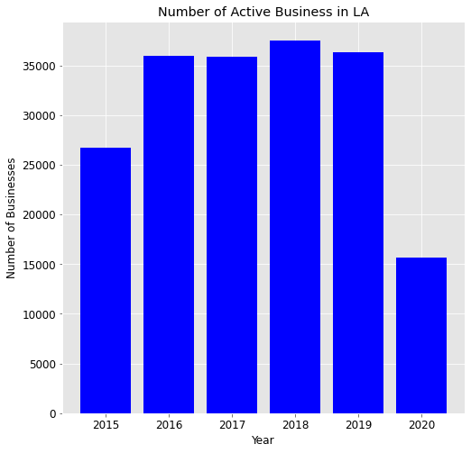
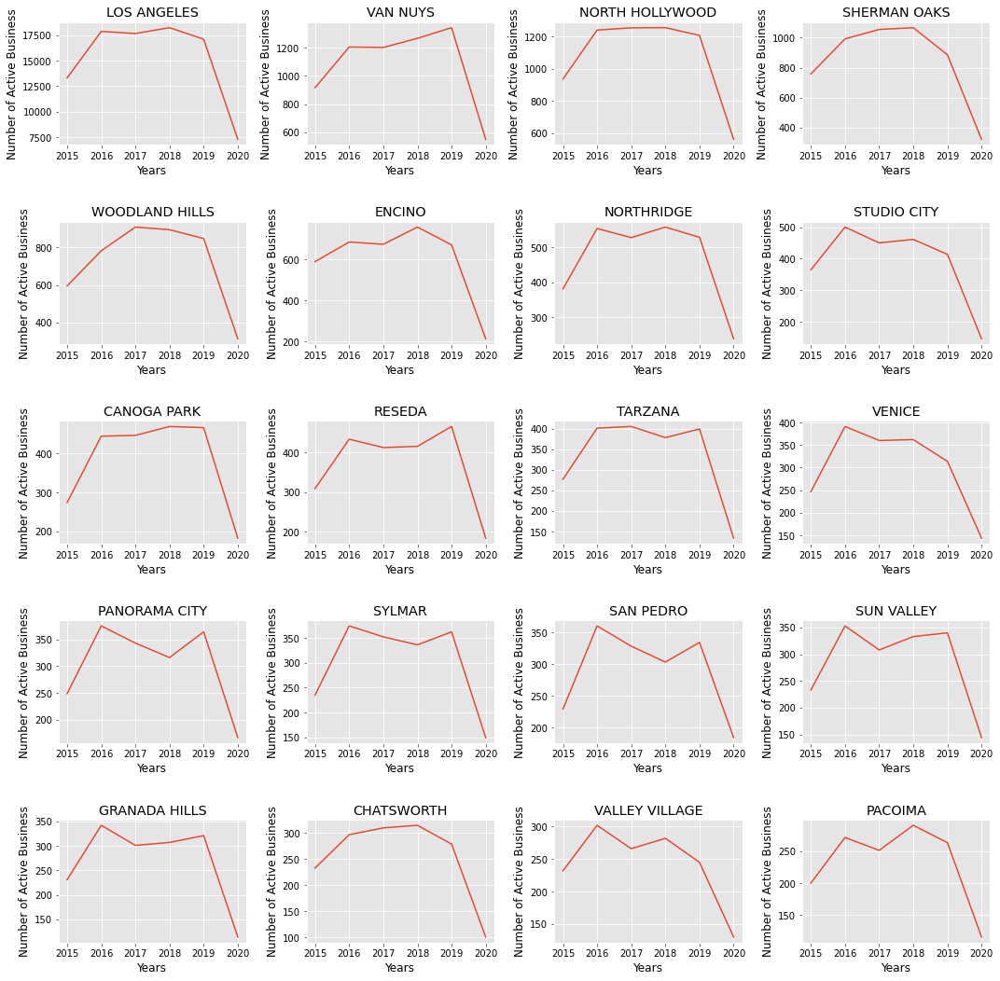
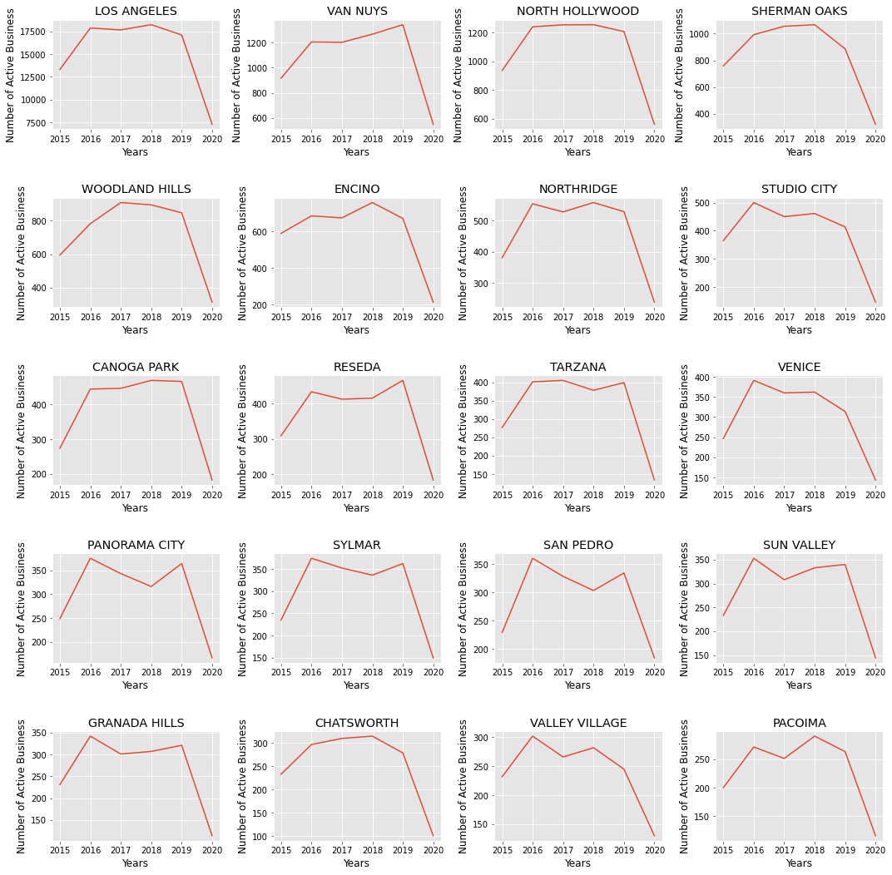

New Active Businesses in LA Between 2015 - July 2020.
Background Info

The project goals
The goal of this project is to evaluate the number of new active businesses that are tracked by the LA
Office for Finance, and determine if the onset of COVID-19 (Jan - July 2020) has an impact on business growth, specifically:
- The absolute number of new active businesses by year
- The absolute number and percentage change of new active businesses by city between 2015-2020
- Determine if there is seasonality in new businesses in LA.
- The absolute number and percentage change of new active businesses by business classification between 2015-2020.
Resources & Citations
Research Objectives
- Data extraction, transformation, loading, and exploring pipeline.
- Question 1: How have the Total Number of New Active Businesses Changed Between 2015 - 2020?
- Question 2: What is the total number of active business by city per year?
- Question 3: How have the number of new businesses change by city between 2015-2020?
- Question 4: What is are the number of new monthly businesses between Jan 2018 - July 2020?
- Question 5: Is there a difference in the number of new businesses by classification?
Methods
Data
- The data for this project was obtained from data.lacity.org using the python module sodapy, to make the API call. The data is a listing of active businesses that are currently registered with the Office for Finace in the City of Los Angeles, CA USA. An active business is defined as a registered business that has not notified the Office of Finance that it will cease its business operations. This dataset is updated monthly and is available here: Data.lacity.org: Listing of Active Businesses
- Data Features: The Dataset consists of 16 features and 534,000 instances. In this post, the dataset was filtered for 9 features (business nane, address, city, zip code, location description, primary naics description, council district, location start date, and location). The data was also filtered for events after '2015-01-10T12:00:00'.
Analysis
The programming language Python was used in this project. The matplotlib library was used to visualize the data, while the Pandas module was used to wrangle the data.
Results:
Data extraction, transformation, loading, and exploring pipeline. The standard Extraction, Transformation, Loading pipeline was used in this project.
- Import data into pandas using sodapy.
- Change Datatypes.
- Remove instances with missing data for location start date.
- Use matplotlib to visualize data.
Question 1: How have the total number of new active businesses changed Between 2015 -
2020?
To determine if the onset of Covid-19 in LA have had an impact on the number of new businesses in LA, a bar plot of the total number of new businesses by year was charted. As figure 1 illustrates, the total number of new active businesses in LA between 2016-2019 was over 35,000 new business, and this number then drops to ~15,000 between Jan- July 2020. It is possible that this number is expected midway through the calendar year, although the fever plot in figure 3 reveals that the number of new businesses between Jan to July for 2020 is nearly half the numbers during the same period in 2018 and 2019. This suggest that the lower numbers we see in 2020 may not be a result of seasonality, but rather a consequence of COVID19 on the LA economy.

{kind=link}
Figure 1. Total number of annual new active business in LA between 2015 - 2020.
Question 2: What is the total number of active business by city per
year?
Los Angeles consists of a patchwork of many small cities, which in this dataset consists of 1672 areas! Looking at whether the onset of COVID in LA has affected each city would be a monumental exercise, instead, I decided to focus only on the top 20 cities that have had the highest number of new active businesses. This included:
'LOS ANGELES', 'VAN NUYS', 'NORTH HOLLYWOOD', 'SHERMAN OAKS', 'WOODLAND HILLS', 'ENCINO', 'NORTHRIDGE', 'STUDIO CITY', 'CANOGA PARK', 'RESEDA', 'TARZANA', 'VENICE', 'PANORAMA CITY', 'SYLMAR', 'SAN PEDRO', 'SUN VALLEY', 'GRANADA HILLS', 'CHATSWORTH', 'VALLEY VILLAGE', and 'PACOIMA'. Table 1 summarizes the total number of new businesses per city by year, between 2015-2020. The number of new businesses for each city seems stable between 2016 - 2019, suggesting that the rate of new businesses was stable, although this drops to nearly half for all cities in 2020. Again, the data only represents the first 7 months of 2020, so I would have to carry out this analysis Jan 2021 to determine the actual annual change between 2019 and 2020.
Table 1. Total annual new businesses by city between 2015 - 2019.
{kind=link}
Question 3: How have the number of new businesses change by city between
2015-2020?
Table 2 summarizes the same data described in Tablw 1, although it provides percent change from year to year. Those in red are a negative change. Here we see that many of the cities in this subset had already seen a drop in new businesses as compared to 2018 levels, so it is possible that the rate of growh was already slowing down before the government imposed a stay at home order due to concerns over COVID19 on public health.
Figure 2 helps to visualize the changes in annual new active businesses by city. North Hollywood is interesting in that it's rate of annual new businesses is stable between 2016 - 2019, and then drops below half its value in 2020. Again, we would need to see how far up these values increase by the end of the year.
Table 2. The percent change in annual new businesses by city between 2015 - 2019.
 

{kind=link}
Figure 2. Change in annual new businesses by city and year.
Question 4: What is are the number of new monthly businesses between Jan 2018 - July
2020?
Thus far, annual data has been analyzed, although this analysis is good at evaluating any trends between 2015-2019, it is not appropriate for 2020, since it only takes 7 months into account. To determine if the number of new businesses for the first 7 months of 2020 trend with the first seven months in 2018 and 2019, a fever plot was prepared. We see in Figure 3 that there is indeed seasonality in new businesses, with november - january having a spike, and then dropping and stabilizing between Jan - Oct, with a slight dip between Oct - Nov. If you compare the curves for these first seven months between 2018, 2019, and 2020, we see that the curve is nearly half the values in 2020 as it is in 2018 and 2019, suggesting that the onset of COVID19 in LA may have contributed to the drop in business growth. In fact, the drop takes place in February of 2020, which is far lower than the rate in the previous 2 years.
{kind=link}
Figure 3.
Question 5: Is there a difference in the number of new businesses by
classification?
In this dataset, there are 291 North American Industry Classification System codes (NAICS). These codes were developed for use by the Federal Statistical Agencies for data related to the US Economy. Using this system, I then wanted to determine if there were changes in the number of new businesses for the top 10 most common NAICS descriptions. Table 3 summarizes these top 10, and well represent the major industries in LA (entertainment, artists/performers, personal services, real estate lessors, and full service restaurants, to name a few). Table 4 then summarizes the total annual number of new businesses by NAICS for each year between 2015-2010, while Table 5 provides the annual percent change for the same time period.
We see that some of these business classifications were already seeing a drop in growth for nearly 4 consecutive years (management, motion picture, lessors of real estate), which some were growing each year (full-service restaurants, and single family housing construction).
Figure 4 visualizes these changes for each NAICS.
Table 3. Top 10 NAICS Descriptions in LA with the Highest Number of New Active Businesses.

Table 4. The total number of annual new active businesses by NAICS between 2015 - 2020.
{kind=link}
Table 5. The annual percent change in new active businesses by NAICS between 2015 - 2020.
{kind=link}

Figure 4. Changes in total new annual business growth by NAICS in LA.